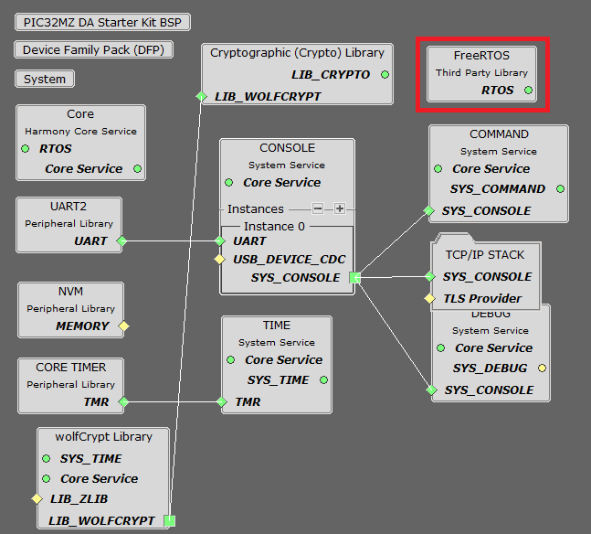
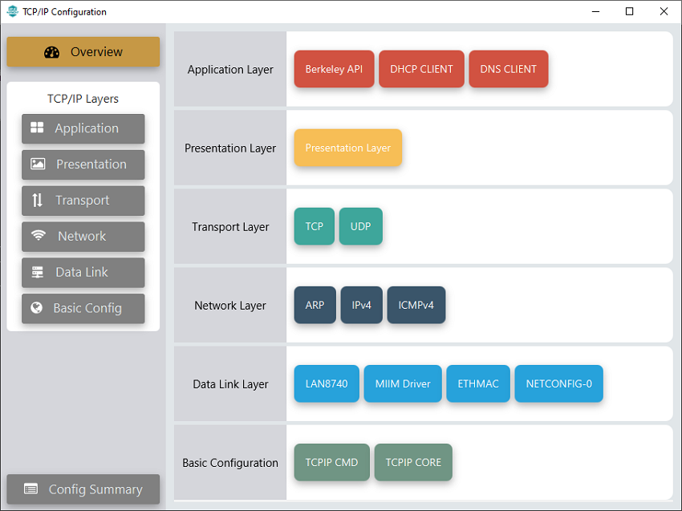
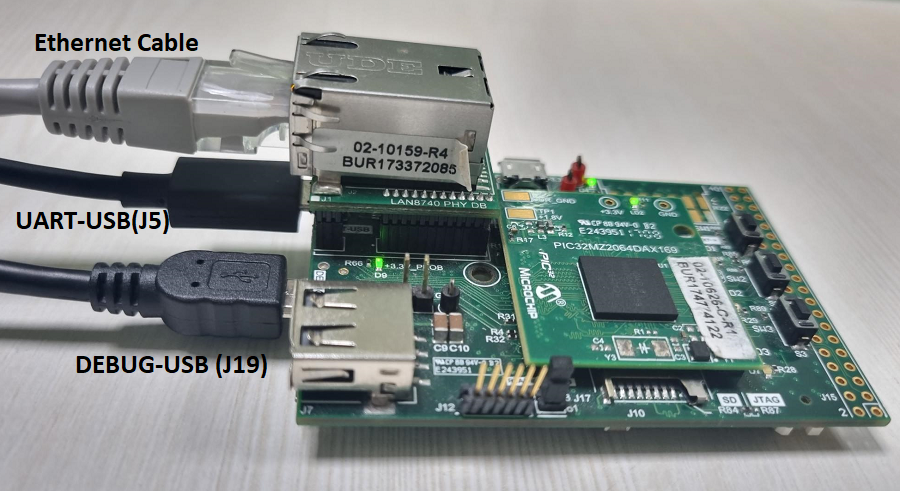
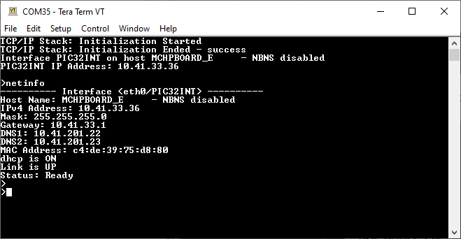
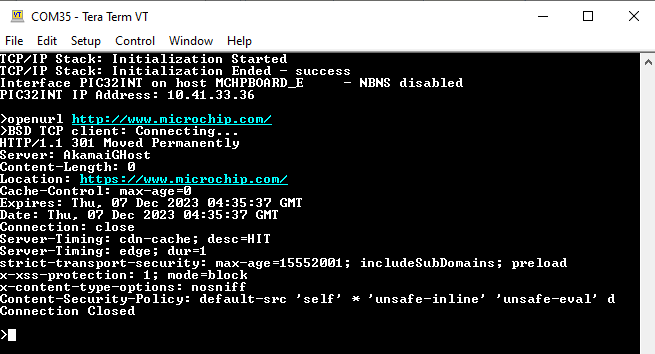

1.1 TCP/IP Berkeley TCP Client
The Berkeley TCP Client configuration demonstrates creating a network client with the Berkeley API to make a TCP/IP connection to a web server.
TCP/IP Berkeley TCP Client MCC Configuration
The following Project Graph diagram shows the Harmony components included in the Berkeley TCP Client application demonstration.
MCC is launched by selecting Tools > Embedded > MPLAB® Code Configurator from the MPLAB X IDE and after opening the project, TCP/IP demo project is ready to be configured and regenerated.
TCP/IP Root Layer Project Graph
The root layer project shows that UART2 peripheral is selected to do read and write operation for TCP/IP commands.
This is the basic configuration with SYS_CONSOLE, SYS_DEBUG and SYS_COMMAND modules. These modules are required for TCP/IP command execution.
NOTE - The above diagram contains FreeRTOS component and that is required for RTOS application. For bare-metal(non-RTOS) FreeRTOS component shouldn't be selected.
TCP/IP Configuration
PIC32MZ DA Starter Kit / PIC32MZ EF Starter Kit

TCP/IP Required Application
TCP/IP demo use these application module components for this demo.
Berkeley API module provides the Berkeley_Socket_Distribution (BSD) wrapper to the native Microchip TCP/IP Stack APIs. During this component selection, the required transport and network modules are also selected.
DHCP Client module to discover the IPv4 address from the nearest DHCP Server.
DNS Client provides DNS resolution capabilities to the stack.
TCP/IP Data Link Layer
Internal ethernet driver(ethmac) is enabled with the external LAN8740 PHY driver library for both the starter kits. The MIIM Driver supports asynchronous read/write and scan operations for accessing the external PHY registers and notification when MIIM operations have completed.
TCP/IP Berkeley TCP Client Hardware Configuration
This section describes the hardware configuration for PIC32MZ DA/EF Starter Kit and one can be used for the respective application demonstration.
This section describes the PIC32MZ DA Starter Kit default hardware configuration which uses the on-board debugger and programmer for this application demonstration.
Refer to the PIC32MZ DA Starter Kit User Guide for the programming/debugging options supported & setting up the hardware.
Connect micro USB cable from the computer to the DEBUG USB connector(J19) on the PIC32MZ DA Starter Kit
Connect micro USB cable from the computer to the USB-UART connector(J5) on the PIC32MZ DA Starter Kit
Establish a connection between the router/switch with the PIC32MZ DA Starter Kit through the RJ45 connector on PHY daughter board
This section describes the PIC32MZ EF Starter Kit default hardware configuration which uses the on-board debugger and programmer for this application demonstration.
Refer to the PIC32MZ EF Starter Kit User Guide for the programming/debugging options supported & setting up the hardware.

Connect the mini USB cable from the computer to the USB DEBUG connector on the PIC32MZ EF Starter Kit
Connect the mini USB cable from the computer to the USB-UART connector on the PIC32MZ EF Starter Kit
Establish a connection between the router/switch with the PIC32MZ EF Starter Kit through the RJ45 connector on PHY daughter board
TCP/IP Berkeley TCP Client Running Application
This table list the name and location of the MPLAB X IDE project folder for the demonstration.
| Project Name | Target Device | Target Development Board | Description |
|---|---|---|---|
| pic32mz_das_sk.X | PIC32MZ2064DAS169 | PIC32MZ DA Starter Kit | Demonstrates the Berkeley TCP Client on development board with PIC32MZ2064DAS169 device and LAN8740 PHY daughter board. This implementation is based on bare-metal(non-RTOS). |
| pic32mz_das_sk_freertos.X | PIC32MZ2064DAS169 | PIC32MZ DA Starter Kit | Demonstrates the Berkeley TCP Client on development board with PIC32MZ2064DAS169 device and LAN8740 PHY daughter board. This implementation is based on FreeRTOS. |
| pic32mz_ef_sk_freertos.X | PIC32MZ2048EFH144 | PIC32MZ EF Starter Kit | Demonstrates the Berkeley TCP Client on development board with PIC32MZ2048EFH144 device and LAN8740 PHY daughter board. This implementation is based on FreeRTOS. |
Running Demonstration Steps
Build and download the demonstration project on the target board.
If the board has a UART connection:
A virtual COM port will be detected on the computer, when the USB cable is connected to USB-UART connector.
Open a standard terminal application on the computer (like Hyper-terminal or Tera Term) and configure the virtual COM port.
Set the serial baud rate to 115200 baud in the terminal application.
See that the initialization prints on the serial port terminal.
When the DHCP client is enabled in the demonstration, wait for the DHCP server to assign an IP address for the development board. This will be printed on the serial port terminal.
Alternatively: Use the Announce service or ping to get the IP address of the board.
Run tcpip_discoverer.jar to discover the IPv4 and IPv6 address for the board.
Execution :
After the successful board bring up, the console output becomes
For TCP Client test, input the following command from the serial port:
openurl < url > - The < url > argument must be a fully formed URL; for instance, http://www.microchip.com/.
For this above URL , the DNS module will make a DNS query. Then it will open a connection to the requested URL and perform a simple HTTP GET command.
The response received from the server will be printed on the terminal application through the serial port.
The expected output -
